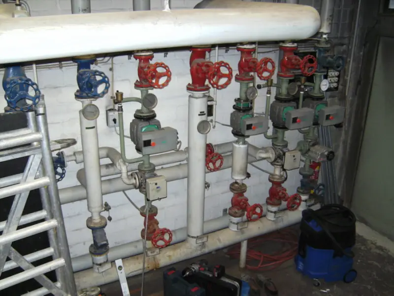

ZählerschrankUnterverteilungRauchwarnmelder SolarthermieDichtheitsprüfungRückhaltewanne
SolarthermieDichtheitsprüfungRückhaltewanne StördienstBlitzschutzTrinkwasserhygiene
StördienstBlitzschutzTrinkwasserhygiene ZählerschrankUnterverteilungRauchwarnmelderBrennwertkesselPelletanlageWärmepumpeSolarthermieDichtheitsprüfungRückhaltewanneStördienstBlitzschutzTrinkwasserhygiene
ZählerschrankUnterverteilungRauchwarnmelderBrennwertkesselPelletanlageWärmepumpeSolarthermieDichtheitsprüfungRückhaltewanneStördienstBlitzschutzTrinkwasserhygiene

BrennwertkesselPelletanlageWärmepumpeSolarthermieDichtheitsprüfungRückhaltewanneStördienstBlitzschutzTrinkwasserhygieneZählerschrankUnterverteilungRauchwarnmelderBrennwertkesselPelletanlageWärmepumpeSolarthermieDichtheitsprüfungRückhaltewanneStördienstBlitzschutzTrinkwasserhygiene